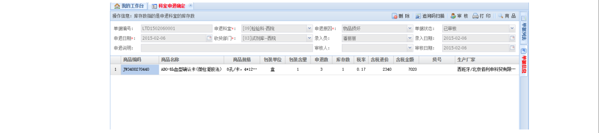
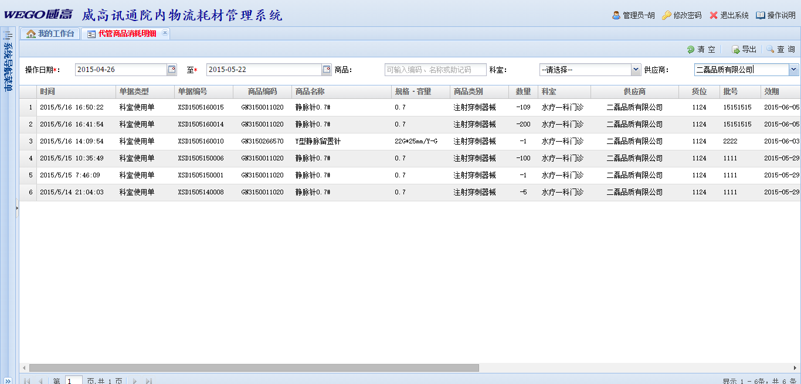

图二
- 主菜单共有六个，【系统维护】、【资料管理】、【库房管理】、【科室管理】、【数据分析】、【结算管理】。
- 【系统维护】下的子菜单是进行系统配置、权限管理、日常维护和自定报表使用的。
- 【资料管理】下的子菜单是进行数据字典、商品档案、其他档案管理的。
- 【库房管理】下的子菜单是对库存物品的价格、订货、调拨、盘点、自动订货进行管理的。
- 【科室管理】下的子菜单是对科室领用申请使用进行管理的。
- 【结算管理】下的子菜单是进行结算单生成、查询、审批和付款的。
各功能模块上公共按钮介绍
- 【新增】左键单击“新增”即可清除表头信息，重新填写新单据。
- 【保存】单据新增后或修改完毕后单击“保存”，即可保存新的单据信息。
- 【删除】对于未审核单据，单击“删除”即可删除此张单据。
- 【导出】若想导出单据信息，鼠标单击“导出”，即以EXCEL表格形式导出信息。
注意：需输入批号信息时，可输入反斜杠“\”后回车带入批号信息。
工具栏上公共功能按钮介绍
主要功能：用户信息查看，修改密码，退出系统
图1
管理员按钮
若要查看用户信息，用鼠标单击界面上的管理员按钮，会弹出对应项目的选择窗口，对用户信息进行查看，出现如图2所示的界面：
图2
- 可查看用户员工工号，姓名，角色，员工身份，联系电话等信息，但不可修改！若要修改信息，在系统维护-权限管理-用户角色管理中修改。
修改密码按钮
若要修改密码，用鼠标单击界面上的修改密码按钮，会弹出对应项目的选择窗口，对密码进行更改，出现如图 4所示的界面：
图3
- 【新密码】：输入新设目标密码。
- 【重复密码】：重复输入新设密码。
- 【确定】：重复输入新密码后点击确定，即可保存新密码。
商退出系统按钮
若要退出系统，用鼠标单击界面上的退出系统按钮，会弹出确认对话框询问是否退出系统，确定后将退出系统，如图4所示的界面：
图4
系统配置
功能介绍：主要分为系统参数设置、编码规则定义、管理架构定义、商品类别定义、货位资料管理、系统菜单管理。
用户参数设置
主要功能：用户使用中的参数进行查看修改。如下图：
系统参数设置
主要功能：对商品默认配置位置、批号管理、超级用户、系统日期、系统名称、系统版本号、用户代码、用户名称和用户注册吗进行参数配置和进行备注，修改后按下右上角保存按钮进行保存。如图1：
图1
- 鼠标左键点击选中要修改的【参数】【备注】信息可作修改，修改后点击右上角【保存】即可保存修改内容。
注意：是否启用数据范围控制：Y
订单审核是否生成订单：N（当为Y/N时为是否生成入库单，都则是以逗号分开的部分）
商品默认配置位置：01（新增商品的默认配置，如果为空则不配置）
是否启用贵重商品单品唯一码：Y（如果启用则从入库起每环节需使用单品唯一码）
批号管理：2（0所有物品都不管批号1仅入库管理批号2全部管理）
超级用户：管理员名
系统版本号：每个系统都会有版本号
双击鼠标左键可进行系统信息的更改
编码规则定义
主要功能：点击编码规则定义后可以进行编码规则查看。如图2：
图2
- 【规则名称】即单据名称，【规则代码】即是规则名称在数据库中所对应的表名称。【是否定长】填写“Y”即是定长
管理架构定义
主要功能：进入管理架构定义后，可以对各个科室进行分级，可进行增加、修改、查询和导出。如图3：
图3
- 在主界面菜单栏中单击【系统维护】→【系统配置】→【管理架构定义】打开【管理架构定义】界面录入需要增加的或删除的科室
注意：注意：其中状态表示该部门是否还在使用，“Y”表示在使用。
-
1) ‘增加’按钮:
若要新增科室信息，鼠标键按下增加按钮后，编辑栏信息清空，对编码、名称、主管、类别、备注进行编辑，以便进行信息的添加。
如图4：
图4
- 1. 在【编码框】输入新增科室编码，
- 2. 在【名称框】输入新增科室名称。
- 3. 点击【主管】及【类别】输入框右侧复选框可显示候选下拉菜单，可直接点击选中目标信息。
注意：编码不可重复。
- 2) ‘删除’按钮：
鼠标选中树形列表中的一条信息，鼠标键按下删除按钮，就会删除此条信息。
注意：有子集的科室及科室中有库存的科室不可进行删除
- 3)‘查询’按钮：
在查询条件中选择要查询的关键字，鼠标键按下查询按钮，就会找到与关键字相一致的所有信息。如图5：
图5
注意：若查询条件框中不填写查询条件，则显示所有科室信息，其中“类别”为“1”的为库房，“3”的是科室。“级次”中“N”为根节点，包含子集，
“Y”为末级。
- 4) ‘导出’按钮：
鼠标键按下导出按钮，对查询的信息以EXCEL表格形式进行导出。
- 5) ‘保存’按钮：
编辑栏编辑后，鼠标键按下保存按钮可以进行信息添加修改保存。如图6：
图6
商品类别定义
主要功能：对商品的编号、名称、类别进行编辑分类，可进行添加删除修改操作，各功能按钮同管理架构定义相同。如图7
图7
- 在主界面菜单栏中单击【系统维护】→【系统配置】→【商品类别定义】打开【商品类别定义】界面
注意：1）‘增加’时，1编码项不可重复。
2）“编码”，第一位“G”为国产，“J”为进口。第二位“N”为内采“W”为外购。第三位为类别，非药非器械为“0”，一类器械为“1”二类为“2”三类为“3”。
药品分蛋肽类为“D”，第五位为“剂型”分类。
货位资料管理
主要功能：对货位进行编号、库房、状态、类型等进行编辑修改和保存。如图8：
图8
- 在主界面菜单栏中单击【系统维护】→【系统配置】→【货位资料管理】打开【货位资料管理】→【货位资料维护】tap页
- 1) ‘新增’按钮：鼠标键按下新增按钮，对编辑栏进行清空，以便信息的添加。其中“货架编号”“所属库房”“库房类别”为必填项。
- 2) ‘删除’按钮：选择一条信息后鼠标键按下删除按钮，删除该条信息。
- 3) ‘保存’按钮：对已有信息修改后或者新增加的信息进行保存。
- 查询信息：在输入框中输入关键字后点击查询后可以查询到与关键字相一致的信息。
- 5) 若货位信息过多，需批量导入，可点击右侧【货位批量导入】tap页，如下图：
- 6) 货位批量导入中，下载货位资料模版后导入货位，双击某条货位进行货位信息维护后，点击【保存】，点击【提交】
注意：若不填写查询条件，查询即显示所有货位信息。
系统菜单管理
主要功能：对系统菜单进行添加修改和删除等操作。如图10:
图10
- 在主界面菜单栏中单击【系统维护】→【系统配置】→【系统菜单管理】打开【系统菜单管理】
- 1)‘新增菜单’按键
鼠标键按下新增按钮后，弹出新的编辑框，对新增的菜单进行编辑。如图11：
图11
注意：1.“功能代码”和“功能排序”输入必须是数字，且在规定长度以内。
2.“所属系统”及“上级菜单”“打开方式”填写框右侧单击可现实复选框进行选择。
- 2)查询信息
在查询信息的输入框中输入关键字进行查询。如图12：
图12
注意：若不填写查询信息，点击【查询】即显示所有信息。
- 3)编辑
在每条信息最右侧有编辑按钮，鼠标键点击编辑，对该条系统菜单进行重新编辑。如图13
图13
- 4)删除
在每条信息最右侧有删除按钮，鼠标键点击删除，对该条系统菜单删除。
权限管理
用户角色管理
主要功能：主要分为用户角色管理、用户角色定义和操作用户定义功能：对用户的管理，如新增用户，删除等操作如图1：
图1
-
角色新增：点击角色新增，填写角色编码和角色名称，点击保存确定
在角色列表中，如删除某个角色，点击角色名称右侧的小红‘X’进行删除操作
双击左侧角色列表中的角色，进行右侧用户权限使用的管理，如图2，点击保存确定
图2
用户角色定义
主要功能：新增用户角色，并进行全线分配，或进行用户信息查询。如图3
图3
- 在主界面菜单栏中单击【系统维护】→【权限管理】→【用户角色定义】打开【用户角色定义】
- 1)角色增加
输入角色编码和角色名称后，鼠标键点击角色增加即可增加新角色。
注意：新增时，编码不可重复。
- 2)菜单标题
点击角色列表中的角色进行权限设置，在菜单标题前的勾选框勾选中选择需要的权限。
注意：若分配的功能为子功能，则要同时选中此子功能的根节点功能。
- 3)填写上方“角色编码”或“角色名称”可按条件查询。
操作用户定义
主要功能：给用户设置登录信息及身份信息，修改用户信息或进行查询。
图4
- 在主界面菜单栏中单击【系统维护】→【权限管理】→【操作用户定义】打开【操作用户定义】
- 1)‘新增’按钮鼠标键按下新增按钮，清空用户编辑信息，进行新编辑。
注意：登陆账号设定后不可修改。员工角色中，属于哪个角色，就拥有哪个角色的权限。
图5
- 在编辑框中输入信息，鼠标键按下保存按钮进行保存。如上图5。
- 3)特定查询功能。如图6:
图6
- 在所属部门、所属角色、或者姓名中输入或者选择需要查询的条件，点击查询条件查询。
注意：其中启用状态表示是否可以登录系统。
日常维护
主要功能：主要分为系统操作日志、系统错误日志、公共字典定义、常用功能管理、数据更新查看、数据空间检查。
系统操作日志
主要功能：可查询登录账号的信息，IP地址和操作时间。如图1：
图1
- 在主界面菜单栏中单击【系统维护】→【日常维护】→【系统操作日志】打开【系统操作日志】界面查看操作记录。
系统错误日志
主要功能：查询登陆账号的错误，IP地址和操作时间。如图2：
图2
注意：点击上方“错误类型”“登陆账号”右侧复选菜单选择查询条件，及日期段空间可查询固定条件下的所有信息。
公共字典定义
图3
- 1)【新增】按钮：增加系统类别信息时，点击新增，会弹出对话框进行字典类别的添加。
注意：是否有效指的是该条字典是否可以使用，自动编码是指是否需要系统自动生成编码等，点击确定。字典分类右侧复选框可选择新增字典的上级分类。
- 2)在系统字典列表中选择字典，进行新增和删除，点击新增按钮后进行当前字典子类的添加。如图4:
图4
注意：包含子类的根节点不可删除。
常用功能管理
主要功能：对系统的功能进行快捷键的添加删除和排序如图5：
图5
数据空间查看
主要功能：查看表空间使用情况。如图6：
图6
打印机维护
主要功能：进行打印机维护，如下图：
待办事宜
待办事宜定义
主要功能：进行查询各个权限中所能看到的待办信息，如下图：
待办事宜查询
主要功能：可查询到处理待办事宜中操作的帐号，如下图：
自定报表
主要功能：用户报表管理，分为待回收定数报表，近效期库存查询。
待回收定数报表
主要功能：用来查询待定数单据。在表头输入筛选条件即可，点击“查询”即可查询到对应信息如图1：
图1
- 在上方筛选框选择要查询的时间段或科室后点击【查询】即可显示待回收定数单据。
近效期库存查询

图2
- 在上方【日期】框选择近效期，或【科室】后点击“查询”即可显示符合条件的商品信息。
数据字典
主要功能：分为单位资料维护、剂型资料维护、药效资料维护、供应商资料维护、生产商资料维护等功能
单位资料维护
主要功能：新增删除和修改单位信息。

图1
- 在主界面菜单栏中单击【资料管理】→【数据字典】→【单位资料维护】打开‘单位资料维护’界面录入单位资料信息
- 1)新增按钮：鼠标键按下新增功能，清空是否有效、单位编码、单位名称。
注意：单位编码不可重复，有效单位要点击“是否有效”后的勾选框。
- 2）删除按钮：选择单位名称鼠标键按下删除按钮，删除该单位名称。
- 3）保存按钮：在编辑框中选择是否有效（是否在使用状态）、单位编码、单位名称后鼠标键按下保存按钮进行保存。
剂型资料维护
主要功能：对剂型信息进行新增修改和删除。
图2
- 在主界面菜单栏中单击【资料管理】→【数据字典】→【剂形资料维护】打开‘剂形资料维护’界面录入剂形资料信息
注意：1.双击左侧列表中的某条信息，点击【删除】即可删除此条信息。
2.新增时编码不可重复。
药效资料维护
主要功能：对药效信息进行新增修改和删除。
图3
- 在主界面菜单栏中单击【资料管理】→【数据字典】→【药效资料维护】打开‘药效资料维护’界面录入剂形资料信息
- 功能同单位资料维护相同
供应商资料维护
图4
- 在主界面菜单栏中单击【资料管理】→【数据字典】→【供应商资料维护】打开‘供应商资料维护’界面录入供应商资料信息
- 1) 【信息查询】：在信息查询框中输入要查询的关键字可以进行定向查询，若不输入鼠标键按下查询进行全部查询
- 2) 【新增按钮】：清空编辑栏内的信息方便进行重新添加。
- 3) 【保存按钮】：在下方编辑框中输入内供应商容后点击保存按钮进行保存。
- 4) 【反审核】：已审核状态的供应商信息点击反审核后可进行再编辑
- 5) 【审核】：对已确认的供应商信息进行审核
生产商资料维护
主要功能：查询新增和修改生产商信息。
图5
- 在主界面菜单栏中单击【资料管理】→【数据字典】→【生产商资料维护】打开‘供应商资料维护’界面录入生产商资料信息
- 功能同供应商资料维护相同
商品档案
主要功能：分为商品资料管理、商品批号维护、商品配置管理、商品资料查询
商品资料管理
主要功能：商品资料的新增修改和删除。及商品的配置科室选择，价格维护。
图6
- 主界面菜单栏中单击【资料管理】→【商品档案】→【商品资料管理】打开【商品资料管理】界面录入商品信息
- 1)【新增】按钮：鼠标键按下新增按钮清空基本信息、辅助信息、配置科室编辑框输入的信息，进行重新输入。
- 2)【保存】按钮：在基本信息、辅助信息、配置科室中填写信息后进行保存。
注意：1. 从EAS导入物料资料到ERP,以UPDATE/INSERT的方式更新
2. 基本信息：在填写基本信息的时候，带星号的为必填项。
3. 辅助信息：用来维护进价，是否贵重等信息。若此商品勾选为“贵重商品”入库和出库时需要进行赋值扫码。是否贵重：如果是贵重物品则在入库、申领出库、使
用环境全流程单品单码管理。
4. 配置科室：单击科室前的勾选框，可对此商品进行科室的配置选择。
5. 检查商品主要信息，配置物料到科室，匹配物料的HIS编码。
6. 批号管理：0全不管批号、1入库管批号、2全管批号
7. 订货单位：在订货时使用的单位、一般为大包装，如果未设置则为【基本单位/最小单位】
8. 使用单位：一般为【基本单位/最小单位】，除订货外的流程中使用的默认单位。
9. 订货系数：订货时物品基本【订货单位】的倍数，默认为1。
10. 定数数量：0非定数管理，本科室使用本物品的定数个数。
11. 定数含量：每定数包含的物品个数（最小单位）。
商品批号管理
主要功能：对商品批号进行查询、删除和新增功能
图7
- 在主界面菜单栏中单击【资料管理】→【商品档案】→【商品批号维护】打开【商品批号维护】界面进行商品批号的新增或删除信息。
- 1)查询按钮：在查询信息输入框中输入关键字后点击查询进行查询
- 2)删除按钮：选择一条商品信息鼠标按下删除键进行删除
-
3)新增按钮：鼠标按下新增按钮后弹出增加信息对话框，在弹出框中进行添加信息，在批号信息维护中输入商品编码、货物条码、批号、效期、注册证号和生产日
期后保存进行增加新信息。
商品配置管理
主要功能：将商品配置到各个科室，并对各个科室商品进行库存编辑，如图8：
图8
- 在主界面菜单栏中单击【资料管理】→【商品档案】→【商品配置管理】打开【商品配置管理】界面更改商品配置信息。
商品资料查询
主要功能：查询商品信息，导出和打印商品信息,如图9：
图9
- 在主界面菜单栏中单击【资料管理】→【商品档案】→【商品资料查询】打开【商品资料查询】界面
- 1)对部门进行配置商品：选择商品名称后点击添加箭头添加到选择的部门中
- 2)对部门商品进行库存编辑：选择右侧商品名称后鼠标双击在最下面进行库存编辑，编辑后进行保存
注意：a)在科室中选中某商品后，可在下方编辑货位及定数信息。
b)其中定数系数指定货时物品基本定货单位倍数，默认为1。
c)定数数量指每定数包含的商品数量（最小单位）
d)“开始日期”不能大于“结束日期”
证照管理
主要功能：供应商证照浏览、商品证照浏览、商户授权浏览、人员授权浏览、检验报告浏览
供应商证照浏览
主要功能：对供应商证照进行查看。
商品证照浏览
主要功能：查询商品证照（如图3、图4）
商户授权浏览
主要功能：查询商户授权。如图5：
图5
人员授权浏览
主要功能：查询人员授权。如图6：
图6
检验报告浏览
主要功能：查询检验报告。如图7：
图7
主要功能：价格管理，补货管理，调拨管理，盘点管理，自动订货。
补货管理
主要功能：对商品进行补货管理、商品补货审核、商品入库管理、商品入库审核、商品退货管理、商品退货审核。
注意：1.系统可与HIS对接，从HIS取要货计划作为ERP订单。
2.设备科长审批时可修改数量，拒绝并给出拒绝原因后库管员可根据原因修正单据。
3.设备科长审批后系统接口自动把订单信息上传到供应商ERP系统。
4.供应商出库后系统接口自动把供应商出库单转为ERP入库收货单，无接口时其它方式通知供应商送货。
5.直送商品不可录入订单，只可由申领-缺货清单生成。
6.订货分为定数或非定数，此处需填写补货单据的为非定数补货。
商品补货管理
主要功能：对商品进行补货申请，有【单据信息】和【单据列表】两个界面（如图1、图2）
图1
图2
-
主界面菜单中依次点击【库房管理】→【补货管理】→【商品补货管理】，单击【商品补货管理】后，如图1，软件板块分为四块分别为菜单栏、表头、表体、页签
栏。
- 1)【单据信息】：在【单据信息】中进行新增商品补货单，输入完全后点击保存
- 2.选择右上方【追加商品】选择需要申请的商品，选择需要申请的商品数量，点击保存按钮弹出提示框提示保存成功。
- 操作：
- a)商品订货申请操作：【单据信息】－>【新增】－>填写需要申请的申请订货部门、供应商和采购员。
-
b) 商品订货申请查询修改操作：【单据列表】－>【查询】－>双击要修改的单据信息，修改商品信息后点击保存，弹出提示框提示保存成功，若是已审核单
据则弹出提示框提示非新单不能保存。
注意：1.若不填写订单编号，保存时候会自动生成编号.
2.选择右上方【商品】选择需要申请的商品或者点击增行后手动添加商品编号按下ENTER键后出现该编号商品信息，选择需要申请的商品数量，点击保存按钮弹出提示框
提示保存成功。
3.已审核单据不能再进行“审核”操作。
商品补货审核
主要功能：对单据查询修改和审核，如图3:
图3
图4
- 1)商品补货查询：选择时间期间点击查询，可以查询到特定时间的所有新单和已审核单据。
- 2)商品补货修改：双击要修改的单据信息进行修改后点击保存。
- 3)商品补货审核:选择要审核的单据点击审核。
- 操作：
-
a) 补货审核操作：【单据列表】－>【查询】－>双击要审核的单据查看信息，修改商品单据后点击保存弹出提示框提示审核成功，若是已审核单据弹出提示框提示
非新单不能审核。
- b) 驳回申请单据操作：【单据列表】－>【查询】－>双击要驳回的单据查看信息，点击驳回后弹出提示框输入驳回原因后，点击确认。
注意：已审单据和已驳回单据，不可再进行“审核”操作。
商品入库管理
主要功能：对已订货的商品进行入库管理。如图5：
注意：1.系统可与HIS对接，从HIS取要货计划作为ERP订单。
2.设备科长审批时可修改数量，拒绝并给出拒绝原因后库管员可根据原因修正单据。
3.设备科长审批后系统接口自动把订单信息上传到供应商ERP系统。
4.供应商出库后系统接口自动把供应商出库单转为ERP入库收货单。
5.N天不送货单据在库管员待办事宜中提醒。
6.入库数量小于订货数时，入库单审核后自动生成新的入库单据，订单单号不变，数量变化。
图5
- 1)新增单据：新增单据填写完信息后，点击保存如图6：
图6
注意：入库商品为贵重物品时，保存会进行一次检测，如果没有贵重商品则保存成功，当选择了贵重商品的时候在保存的时候会提示要为贵重商品复制扫码，如
上图。
- 2) 追溯码扫描：贵重物品入库时需生成商品条码，在以后的出入库操作中单品单码管理。如图7：

图7
- 3)【单据列表】：查询一定时间段内的单据可以修改后再保存，其中审核的单据不可以修改
注意：a)单据编号若没有填写在保存的时候会自动生成。
b) 选择要入库的商品信息直接点击增行后在商品编码中填写编码后按下ENTER键会自动出现该编码的商品信息，若没有该编码的商品信息则会弹出提示框提示未配置该
编码商品。
图8
- 4)追溯码扫描操作：对于非贵重商品点击赋码扫描会弹出提示框请输入商品信息。单击追溯码扫描，生成商品条码如图9：
图9
- 5)查询修改商品入库操作：【单据列表】－>【查询】－>双击要修改的商品单据，修改后点击保存，弹出提示框提示保存成功。
注意：若修改的是已审核单据则弹出提示框提示非新单不能修改。
商品入库审核
主要功能：对需要入库的单据进行审核，如图10：
图10
- 1)审核单据：点击查询单据后选择要审核的单据双击点击审核，如图11：
图11
- 2)驳回单据：点击查询单据后选择要驳回的单据后点击驳回，选择驳回原因后保存，如图12：
图12
- 操作：
- a) 商品入库审核操作：【单据列表】－>【查询】－>双击要审核的商品单据，查看或修改商品信息，鼠标键按下审核后弹出提示框提示审核成功过。
注意：若是已审核单据则暗处提示框提示非新单不能审核。
-
b) 商品驳回操作：【单据列表】－>【查询】－>双击要驳回的商品单据，鼠标键按下驳回，弹出对话框，填写要驳回的原因后点击确定弹出提示框提示驳回成功。
c) 追溯码扫描确认：【单据列表】－>【查询】－>双击要审核的商品单据，点击追溯码按钮进行扫描高值追溯码，如下图：
注意：若存在高值商品，需输入高值商品追溯码进行确认后才可以入库
商品退货管理
主要功能：填写退货单据，如图13：
图13
- 1)新增单据后填写要退货的商品保存单据，其中需先将表头信息填写完整后再填写退货商品详情，未审核单据退货数量可更改。
- 操作：
-
a)商品退货操作：【单据信息】－>【新增】－>退货员、供应商、退货地点、退货日期、退货原因，填写完整。鼠标键按下商品按钮，弹出信息框（如图14），选
择要退货的商品，填写退货数量后保存。
注意：1.表头可填写单据编号，若未填写则会在保存时自动生成。
2.要退货的商品在退货地点中必须有库存。
-
b) 商品退货查询修改操作：【单据列表】－>选择要查询的条件－>【查询】－>双击要查看的商品信息查看详情、修改、点击【保存】后弹出提示框提示保存成功后再点击【提交】按钮
图14
商品退货审核
主要功能：对退货单据进行修改审核，如图15：
图15
- 1)点击查询单据后选择要审核的单据双击打开明细，确定无误点击审核，如图16
- 操作：
-
商品退货审核操作：【单据列表】－>选择要查询的条件－>【查询】－>双击要查看审核的单据信息，查看或修改后点击【审核】按钮，弹出提示框提示是否审核，
鼠标键按下是后弹出提示框提示审核成功
图16
调拨管理
库房商品调拨、商品调拨出库、商品调拨入库、商品调拨查询。
注意：1. 在商品调拨出库审核后，出库库房库存消减，单据状态变为“已出库”。
2. 在商品调拨入库审核后，申请库房库存增长，单据状态变为“已收货”。
库房商品调拨
图1
- 1)【新单】按钮：在如图1所示单据信息界面，清空表体，填写新的调拨单。
- 2)【商品】按钮：在新单状态下，单击商品按钮，弹出商品信息框，选择要调拨的商品。
- 3)【保存】按钮：选择好商品后，在单据的“申请数”列填写或修改调拨数量，单击保存。
- 4)【审核】按钮：调拨单确认无误后单击“审核”，单据状态变为“已提交”，此时不再进行被修改操作。
注意：1.表头申请库房指申请调拨入库的库房。
2.出库库房指调拨出库的库房。
3.单据编号无需填写，在单据保存时自动生成。
4.“已提交”状态的单据不再进行增删改操作。
图2
- 5)【单据列表】界面：如图2填写表头筛选条件，单击“查询”，显示符合条件的调拨信息。
- 6)【审核】按钮：在列表左边勾选框勾选要审核的信息，单击审核，单据状态变为“已提交”。或双击单据，跳转到“单据信息”查看详情，并审核调拨单。
商品调拨出库
图3
图4
- 1)【单据列表】界面：在“商品库存调拨”界面做的调拨单可在此界面查询如图3。双击单据跳转到【单据信息】界面，如图4
- 2)【分配库存】按钮：在【单据列表】界面双击打开的单据明细后，单击分配库存按钮，系统自动分配库存。
- 3)【驳回】按钮：对于不予处理的单据，单击驳回，选择驳回原因后，在“库房商品调拨”界面可修改此单。
- 4)【审核】按钮：调拨单确认无误后单击“审核”，单据状态变为“已提交”，此时不再进行被修改操作。
注意：1. 若申请调拨库存大于出库库房的库存时，按出库库房的库存分配。
2. 若申请数小于出库库房的库存数，则自动按申请库存分配。
3. 若单据里的商品在出库库房的库存都为零，在审核时，会提示驳回此单。
4. 对于未审核的单据，出库数可手填写或修改。
商品调拨入库
图5
- 1) 【单据列表】界面：可以按条件查询到商品调拨单，双击跳转到【单据信息】界面查看单据详情。如图6
图6
- 2) 【审核】：申请库房收货后，核对货物和单据后单击审核，此时申请库房的库存增加。
注意：1. 申请调拨的库房要确保申请的商品已在系统中配置到库房。
2. 申请调拨的商品要在原库房中库存充足
3. 当点击审核按钮后，申请库房库存已经进行增库存
商品调拨查询
图7
- 1) 【查询】按钮：填写表头筛选条件后单击查询，查询条件内调拨信息。
- 2) 【清空条件】按钮：单击此按钮清空表头筛选信息。
- 3) 【导出】按钮：单击导出，可以以EXCEL表格形式导出查询到的信息。
注意：1. 商品状态中“已申请”表示做了商品调拨单并审核，但出库库房还未调拨出库。
2. “已在途”表示出库库房已经做了调拨出库，但收获库房还未收货。
3. “新单”表示商品调拨单未审核。
4. “已入库”表示收货库房已做调拨入库。
5. “申请数”指的是商品调拨单里的申请调拨数量，“调拨数”指出库库房调拨出库的数量。
盘点管理
主要功能：分为盘点计划管理、盘点管理单据、盘点损益查询、商品损益管理。
注意：1.库房、药房、科室制定确认盘点计划，锁定库存，不再进行进销存操作。
2.生成空白盘点表分发到各科室，各科室进行库存商品盘点。
3.将盘点数量录入盘点单。
4.盘点完成后进行审核确定并根据损益情况调整库存。
盘点计划管理
- 1) 【保存】按钮：新增计划单后，单击保存。或单据列表里未审核的单据修改后保存。
- 2) 【审核】按钮：计划单确定无误时审核，同时会在【盘点管理单据】中生成计划单中所有科室的空白盘点表。
- 3) 【科室】按钮：单击科室，查询所有科室信息，选择要盘点的科室。
注意：已生成盘点计划表，且未完成盘点流程的科室，不再生成新的盘点计划。
盘点管理单据
- 1) 【保存】按钮：科室完成盘点后，若有实际库存与系统库存不符的情况，在“盘点数量”一栏修改数量后保存。
- 2) 【审核】按钮：盘点数量录入无误后审核。
- 3) 【打印】按钮：生成科室盘点表后，单击【打印】，生成纸质盘点表，各科室领取盘点表进行库存盘点。
注意：只有同一张盘点计划单里的科室都盘点完成并审核后，才可在盘点计划管理中审核此张计划单，同时调整库存。
盘点益亏查询
-
1) 【查询】按钮：盘点计划中包含的科室都完成盘点单的录入审核后，审核这张计划单，同时在【盘点损益】界面生成科室损益单，可在【单据列表】中查
询并双击查看明细。
注意：
商品损益管理
- 1.发现损益时录入损益信息。
- 2.损益信息审核确认后，调自动整库存
- 1) 【保存】按钮：录入损益单完成后保存。
- 2) 【提交】按钮：保存后的损益单点击提交
商品损益审核
- 查询到已提交的损益单进行审核，审核后库存改变，如下图：
- 1) 【审核】按钮：对已提交的损益单点击审核后，库存改变
- 2) 【驳回】按钮：对已提交的损益单点击驳回后，库存不进行改变
出库管理
主要功能：将物料从库房直接出库到科室
库房出库管理
- 操作：
- 1) 新增出库单操作：【单据信息】→【新单】→选择要进行出库的库房和收货的科室信息→【追加商品】→添加商品明细→【保存】→【提交】
- 2) 查询出库单操作：【单据列表】→在界面上方输入查询条件→【查询】→双击某条单据查看单据明细
库房出库审核
- 操作：
- 1) 审核出库单操作：【单据列表】→在界面上方输入查询条件→【查询】→双击某条单据查看单据明细，点击【审核】按钮，提示审核成功
- 2) 驳回出库单操作：【单据列表】→在界面上方输入查询条件→【查询】→双击某条单据查看单据明细，点击【驳回】按钮，输入驳回原因后点击确定
申领管理
主要功能：分为科室申领录入、科室申领审批、申领库存分配、申领出库确认、科室申退管理、科室申退确定、商品缺货管理等。
注意：1.护士长填写物料申领单
2.设备科长审批—可修改数量，批量全审批，缺货部份生成补货申请单。
3.库管员确认、分配库存，生成出库单，有库存为立即出库、无库存部份生成待出库出库单。
4.库管员根据打印的申领出库单出库。
5.配送员送货附出库清单到科室。
6.护士长核对清单、签收，如果货单不符则配送员从库房换补。
科室申领录入

图1
- 1） 新增按钮：鼠标点击新增，可以清空原有信息填写新单据。
- 2） 删除按钮：选择右侧【单据列表】里的未审核单据，左键点击删除，可以删除单据信息。
- 3） 保存按钮：录入新单或修改【单据列表】里的未审核单据，左键点击保存，可以保存新单信息或保存修改信息。
- 4） 提交按钮：保存后的单据可进行提交
- 5） 打印按钮：选择单据后，点击打印，可打印选中的单据。
- 6） 追加商品按钮：添加商品信息。
- 7） 删行按钮：选中要删除的商品名称，点击删行即可删除此条商品信息。
- 8） 查询商品按钮：可查询并选择此科室的所有商品。
- 操作:
-
a) 添加单据操作：【单据信息】－>点击【新增】按钮后清空恢复初始化，填写详细信息后点击【追加商品】（如下图）进行选择需要申领的商品，点击保存后单据生成后点击提交。
-
b) 查询单据操作：【单据列表】－>选择【申领日期】－>【查询】，可查询到此时间段的所有单据信息，若需要详细查找，可以再信息栏中填写需要查询单据的关键字后进行查询单据信息。
科室申领审批
图2
- 1） 删除按钮：在右侧【单据列表】里选中双击某新单，可以查看单据明细，点击删除可以删除此单据。
- 2） 审核按钮：在右侧【单据列表】里打开某新单，点击审核按钮，即完成新单审核。
- 3） 驳回按钮：打开右侧【单据列表】里的某新单，点击驳回按钮即可驳回此单据。
- 4） 打印按钮：选中某单据后点击打印，可打印此单据。
- 操作：
-
a) 审核单据操作：【单据列表】－>【查询】－>双击要审核的单据信息，查看单据后可以修改商品单据数量和进行删除或修改某条商品信息，点击审核按钮
后弹出提示框提示审核成功，若审核已经审核的单据信息，会弹出提示框提示非新单不能审核。
-
b) 删除单据操作：【单据列表】－>【查询】－>双击要查看的单据信息，查看单据后需要删除点击删除按钮，会弹出提示框提示是否删除该条单据信息，选
择否则取消删除，选择是则删除该条单据信息。
-
c) 驳回单据操作：【单据列表】－>【查询】－>双击要查看的单据信息，若不予以通过可点击驳回按钮，会弹出对话框，进行选择要驳回的原因（图3），点
击确认后进行驳回。
图3
注意：1.若库存不足时，会自动生成补货单据，可在库房管理—补货管理—商品补货管理中查询。
2.若驳回的单据信息是已审核的单据，则弹出提示框提示非新单不能驳回。
3.已审批单据不能进行修改。
申领库存分配
图4
-
1） 查询按钮：在表头选择查询条件，点击查询，即可在左侧框中显示符合选择条件的申领信息，并在右侧框中显示或修改配给信息及此商品的库存数量。
- 2） 顺序分配按钮：若多条申领信息，点击顺序分配即可按顺序分配商品。
- 3） 平均分配按钮：将商品库存平均分配给申领科室。
- 操作：
- 分配操作：【查询】－>左侧出现需分配的商品信息－>双击某条商品信息进行分配。
注意：分配数量可以小于当前可分配的数量也可以大于当前可分配的数量，若大于当前可分配的数量系统将会自动生成缺货清单，此清单可以在【商品补货管理
】中查询到。
拣货完成确认
图5
- 1） 保存按钮：对于新填写的单据进行保存或对【单据列表】里。
- 2） 赋码扫描按钮：出库商品若为贵重商品，出库时需扫码。
- 3） 导出按钮：左键点击导出，可以Excel表格形式导出【单据信息】。
- 操作：
-
a) 出库确认操作：【单据列表】－>【查询】－>双击要查看商品信息－>【保存】，若存在贵重商品会弹出提示框提示要进行赋码扫描，可以手动输入也可以
使用扫码枪进行输入，之后在点击保存按钮提示保存成功，既已进行出库确认。
- b) 导出操作：【单据列表】－>【查询】－>【导出】，便可导出所有已查询到的单据信息。
注意：1.申领出库确认后，单据状态从“审批”变为“审核”。
2.申领出库确认后数据分析-业务查询-库存查询，申领科室库存数量增加，出库部门库存减少，并且在进销存明细中可查询这两条明细信息。
科室申退管理
图6
注意：1. 申退科室即要退货的科室，收货部门为收取退货部门。申退数要小于库存数。
2. 科室非定数申请后进行以使用信息管理录入后进行结算，则退货操作由此进行。
- 2） 删除按钮：对于右侧【单据列表】中，双击显示新单单据明细，点击删除，即可删除此单。
注意：已审核单据无法删除。
-
3） 保存按钮：新单填写完毕后，点击保存即可保存此单。右侧【单据列表】里打开某未审核单据进行增行或删行等修改后，点击保存，即可保存修改 。
- 4） 增行按钮：点击对新单增行，在编码框输入要退货的商品编码回车，带入商品信息并填写退货数。
- 5） 删行按钮：选中某行，点击【删行】即可删除此行。
- 操作：
- a) 添加申退物流单据操作：【单据信息】－>【新增】－>填写要申退的商品信息并添加要申退的商品以及数量，点击【保存】会弹出提示框提示保存成功后点击【提交】。
- b) 申退商品单据的修改：【单据列表】－>【查询】－>双击要修改的商品单据后进行修改商品信息，之后点击【保存】按钮弹出提示框提示保存成功后点击【提交】。
科室申退确定
图7
- 1） 【删除】按钮：在单据列表中选中某单据双击，打开明细，点击【删除】即可删除未审核单据。
-
2） 【审核】按钮：在单据列表中双击打开单据明细，点击审核确定退货单据，单据状态由“新单”变为“已审核”，此时单据不可再进行修改删除等操作。
- 操作:
-
a) 商品申退审核操作：【单据列表】－>【查询】－>双击要审核的商品单据，查看或者修改商品后点击审核，弹出提示框提示审核成功，若审核已审核的单
据则弹出提示框提示非新单不能审核。
-
b) 删除申退单据操作：【单据列表】－>【查询】－>双击要删除的商品单据，点击删除按钮，弹出提示框提示删除成功，若删除的是已审核单据则弹出提示
框提示非新单不能删除。
注意：高值商品退货需输入追溯码，点击【追溯码】后进行扫描
商品缺货管理
- 主要功能：科室申领的商品中，存在库存不足以分配的商品，将在该界面中出现并进行集中处理，如下图：
- 操作:
- 1) 订单生成操作：选择要生成订单的已提交状态的商品信息，点击【订单生成】按钮后，生成补货单（该补货单可在库房补货、代管补货中查看）
- 2) 单据废弃操作：选择要废弃的已提交状态的商品信息，点击【单据废弃】按钮，不会生成补货单
注意：代管商品可手动选择供应商
使用管理
主要功能：分为使用信息管理、高值商品使用、使用信息分析等。
注意：1.患者信息非必输项。
2.使用即增、减库存。
使用信息管理
图9
- 1） 新增按钮：鼠标左键单击【新增】按钮，即可清空下方编辑框中的信息，填写新的科室使用信息。
-
2） 删除按钮：在上方表头填写筛选条件后，单击右上方【单据列表】，显示符合条件的使用单据，双击单据后显示单据明细，单击【删除】按钮即可删除使
用信息。
- 3） 保存按钮：对新单进行保存或修改后点击【保存】，即完成了使用信息的确定。
- 操作：
-
a) 使用信息新增操作：【单据信息】→【新增】→填写使用信息（使用科室、实用信息必填单据编号可自动生成），点击增行输入商品编码按下ENTER键后出
现商品信息或者点击【商品】选择已使用的商品信息后，输入使用数→【保存】，若商品选择错误可以鼠标键选择后点击【删行】进行删除该条商品信息。
- b) 查询使用信息操作：【单据列表】→【查询】→双击要查看的单据信息查看明细
注意：使用商品必须是此科室有库存的商品。
高值商品使用
注意：1.手术室向ERP库管员通知病人手术、所需高值耗材情况。
2.ERP库存员通知供应商备货。
3.供应商将打包好耗材及清单送至手术室。
4.手术完成，手术主治医师、护士长根据手术使用清单勾选耗材（普通、高值均有，未使用耗材供应商直接带回）。
5.ERP管理员根据清单录入耗材使用单（根据耗材是否贵重生成追溯码并使用HIS接口匹配患者信息）。
6.系统根据使用单对高值耗材作虚入虚出、普通耗材根据库存使用出库。
图10
- 1） 新增按钮：鼠标左键点击新增，即清空上方选择框，新增高值商品使用的记录。
- 2） 删除按钮：在单据列表中选中单据，双击查看明细，点击“删除”即可删除使用信息。
- 操作：
-
a) 新增高值商品使用操作：【单据信息】→【新增】→填写使用科室、使用信息、点击【增行】，输入商品编码后按下ENTER键出现商品信息或者点击【商品
】鼠标键选择已使用的商品信息，输入商品使用数→【保存】，若商品选择错误可以鼠标键选中后点击【删行】进行删除该条商品信息。
- b) 查询高值商品使用操作：【单据列表】→选择要查询的条件→【查询】，双击要查看的单据信息进行查看明细。
- c) 扫码输入操作：在界面上方进行高值追溯码扫描后，点击保存按钮
商品退货申请
注意：1. 若科室结算模式为科室非定数出库确认后即可进行结算，退货申请需进行该操作
2. 科室进行非定数申请后的商品，可在此菜单中进行退货申请
3. 护士长需在此页面中进行退货申请录入
图11
- 操作：
- a) 新增商品申退单操作：【单据信息】→【新单】→选择申退科室、退货原因、回收库房后→【商品】→选择要退货的商品后点击保存后，点击提交
- b) 查找新增商品退货单操作：【单据列表】→选择要查询的条件→【查询】，双击要查看的单据信息进行查看明细。
商品退货审批
注意：1. 设备科科长对护士长非定数商品的退货申请进行审批
图12
- 操作：
- a) 商品退货审批操作：【单据列表】→选择查询条件→【查询】→选择要审批的新单，双击打开查看明细→【审核】
- b) 商品退货单查看操作：【单据列表】→选择要查询的条件→【查询】，双击要查看的单据信息进行查看明细
注意：1. 设备科科长对护士长非定数商品的退货申请进行审批
商品退货审核
注意：1. 有库管员对护士长非定数商品的退货申请进行二级审核
图13
- 操作：
- a) 商品退货审核操作：【单据列表】→选择查询条件→【查询】→选择要审批的新单，双击打开查看明细→【审核】
- b) 商品退货单查看操作：【单据列表】→选择要查询的条件→【查询】，双击要查看的单据信息进行查看明细
高值条码打印
- 操作：
- 1) 查询打印操作：在界面上方选择查询条件，点击【查询】按钮，选择要打印的高值条码点击【打印】按钮
定数管理
主要功能：定数出库管理、定数回收管理、定数出库记录、定数条码重打等。
注意：1.定数条码：24位，6位年月份+4位出库库房+4位科室+7位商品编码+3位流水（循环使用--DOC_GOODSCFG.NUM2）。
2.定数出库单一式两联，科室经手人签字、护士长签字(外加固定的质检员)，作为结算原始凭证。
定数出库管理
图1

图2
- 1） 【新增】按钮：点击【新增】，可以填写新的商品定数出库信息。
- 2） 【删除】按钮：在单据列表中选中未审核的新单，双击查看明细，对未审核单据进行删除。
- 3） 【保存】按钮：对新填写的单据进行保存，或对【单据列表】中未审核单据修改后保存。
- 4） 【审核】按钮：对未审核单据进行审核确定，单据状态由“新单”变为“已审核”。
- 5） 【增行】按钮：对未审核单据点击增行可增加此单据商品信息。/li>
- 6） 【删行】按钮：打开单据详细信息，点击要删除的行的商品名称，可删除此行。
- 操作：
-
a) 增加定数定数出库操作：【单据信息】→【新增】→填写出库部门、申领人、申领科室、申领日期、备注说明（选填）后点击【增行】按钮，填写商品编码后按下ENTER键自动出现该商品编码的信息或者点击【商品】鼠标选择要出库的商品后点击确定，点击【保存】
-
b) 查询审核定数出库操作：【单据列表】→选择要查询的条件→【查询】→双击要查看的单据信息，查看后可点击【审核】按钮后弹出对话框提示是否确定审核，点击【是】后提示审核成功。
定数回收管理
注意：1.定数回收单尽可能的在科室或护士站扫码、打印。
2.定数回收确认时减科室库存、生成新的【定数出库单】。
图3
- 1） 【新建】按钮：鼠标左键点击新增按钮，即可清空下方信息框，重新做单。
- 2） 【删除】按钮：对于右边【单据列表】里的未审核单据，双击查看明细，点击删除，即可删掉此单据。
- 3） 【保存】按钮：新单填写完成后点击保存，可保存此单，且在【单据列表】里显示。也可对未审核订单写改后点击保存，则修改成功。
- 4） 【复制】按钮：打开单据详情，点击复制，则可复制此单并在【单据列表】里显示。
- 操作：
- a) 填写定数回收操作：【单据信息】→填写回收部门、回收人、回收科室、回收日期、备注说明（选填），点击【保存】按钮进行保存
-
b) 审核定数回收操作：【单据列表】→选择要查询的条件→【查询】→双击要查询的商品单据后查看明细后点击【审核】按钮弹出是否审核对话框，选择“是”后，
审核成功。
定数出库记录
图4
- 1） 查询按钮：填写表中查找条件，点击查询，即可查询到符合条件的定数出库记录。
- 2） 导出按钮：查询需要的商品信息后点击导出，即可导出ECXEL文档
- 操作：
- 查询操作：在页面上方选择要查询的条件：商品编码、使用科室、是否回收、出库日期后，点击-【查询】按钮进行查询
注意：1) 若不填写查找条件，则显示全部定数出库记录。
2) 可根据不同的查询条件导出不同条件的商品出库记录
定数条码重打
图5
- 1） 【查询】按钮：选择上方查找条件，点击查询，即可显示符合条件的信息。若不填写查找条件则显示所有定数出库商品信息。
- 2） 【打印】按钮：查找到需要的信息后，选中需要重打条码的信息，单击“打印”，即可打印新的定数条码。
定数调整申请
注意：1) 定数调整由护士长进行申请调整
2) 查看单据明细需双击已查询到单据
图6
图7
- 操作：
- a) 定数调整申请操作：【单据信息】→【新单】→输入申领科室、调整原因、商品定数调整信息→【保存】
- b) 定数调整单据查询操作：【单据列表】→输入要查询的条件（单据编号、使用科室、申请日期）→【查询】
定数调整审核
注意：定数调整审核由设备科科长进行审核

图8
- 操作：
- a) 查看的定数调整单据操作：【单据列表】→选择要查询的条件（单据编号、申领科室、申领日期）→【查询】
- b) 定数调整审核操作：双击查询到的单据调整单据（且为新单状态）→点击【审核】按钮→弹出提示框是否确认审核此单据？→【确定】
定数异常报告
- 主要功能：定数数量过多的时候，将在此界面中给出提示，由人工来判断是否需要更改定数，如下图：
- 操作：
- 1) 查询操作：在界面上方选择要查询的条件，点击查询按钮后进行查询
资料管理
科室商品查询
- 操作：
- 1) 查询操作：在界面上方选择要查询的条件，点击查询按钮进行查询
- 2) 收藏操作：选择要收藏的商品点击收藏按钮进行收藏
科室商品收藏
- 主要功能：进行科室常用商品收藏，便于以后查询使用，如下图：
- 操作：
- 1) 查询操作：在界面上方选择要查询的条件，点击查询按钮进行查询
- 2) 收藏操作：点击界面右上方的收藏按钮后，点选择要进行收藏的商品进行收藏
定数替代管理
主要功能：进行定数商品替代关系的录入，按照调整类型，主要分品种切换和一品多码两种类型
图1
说明：
- 1) 品种切换：若物料A为定数商品，物料B为新商品，将物料B替代物料A，且定数数量不变，定数含量可按B的包装修改
- 2) 一品多码：若物料A为定数商品，物料B为新商品，当物料A库存不足的时候，由物料B暂时替代物料A进行定数出库
操作：
- a) 录入品种切换单操作：【单据信息】→【新单】→选择调整类型[1]品种切换，输入调整原因，输入切换物料和被切换物料编码→点击【追加科室】→【保存】（如图2）
- b) 录入一品多码单操作：【单据信息】→【新单】→选择调整类型[2]一品多码，输入调整原因，输入切换物料和被切换物料编码→点击【追加科室】→【保存】（如图3）
图2
图3
注意：
1. 一品多码可以是一个被替代商品对应多个替代商品，也可以是多个被替代商品对应一个替代商品
2. 替代情况分为：
1、原商品与新商品同时存在;
2、正常（只有原商品配置了定数）;
3、不存在被替代商品。
定数替代审核
主要功能：将录入的品种切换和一品多码两种类型的单据进行审核。
图1
操作：
- a) 审核操作：【单据列表】→选择查询条件→【查询】→双击打开要进行审核的已提交状态单据→【审核】
注意：
1. 已完结状态：品种切换生效，原商品在切换科室中的库存消耗完毕
2. 开始执行：每日开始进行自动调度，直到被切换商品库存消耗完毕后自动替代
定数替代关系
主要功能：查看物料之间的替代关系和切换关系，可作废替代关系。
图1
操作：
- a) 取消替代关系操作：选择查询条件→【查询】→点击【作废】
说明：
定数日志查询
主要功能：进行查询定数替代关系开始时间和作废时间。
图1
操作：
结算单管理
主要功能：分为生成结算单、结算单查询、结算单审批、结算单付款
注意：1.每月X号库管员生成上月对帐单，每科室一张，单据头为结算周期、结算金额，明细为科室收货单列表。
2.财务经理审核对帐单（可核对科室收货原始单）。
3.供应商按结算单金额开具发票。
4.财务经理接收发票、录入发票到系统。
5.财务经理付款。
生成结算单
主要功能：生成结算单、单据列表、单据信息
图1
- 1) 生成结算单：从科室上次结算到现在，对选择结算的科室生成结算单。双击跳转到【单据列表】，显示此结算单包含的结算单据。
- 2) 单据列表：查询结算单内的单据，双击跳转到【单据信息】界面，显示单据详情。
- 3) 单据信息：查看结算单据中结算的单据的详情
- 操作：
- a) 生成结算单操作：【生成结算单】→【查询】→选择要生成结算单的单据后点击【生成结算单】按钮。
- b) 查询单据信息操作：【单据列表】→选择查询条件→【查询】双击要查看的生成单据的商品信息
结算单查询
图2
- 操作：
- 结算单查询操作：【单据列表】→选择要查询的条件→【查询】，双击要查询的商品单据查看详情
结算单审批

图3
- 操作：
-
结算单审批操作：【单据列表】→选择要查询的条件→【查询】，选择要进行审核（或驳回）的单据后点击审核（或驳回），弹出对话框提示是否审核（弹出驳回对话
框），选择是（填写驳回理由后点击确定），提示审核（驳回）成功。
特殊结算管理
- 说明：
- 1) 针对具有特殊性的单据进行有选择的结算
- 2) 点击【生成结算单】按钮后，将在结算单查询、结算单审批中出现该结算单

图7
图8
- 操作：
- a) 生成结算单操作：【单据信息】→选择条件（结算科室、出库单号、结算日期、结算方式等）→【查询】→选择要生成结算单的出库单号（可多选）→【生成结算单】
- b) 特殊结算单查询操作：【单据列表】→选择条件(单据编号、生成科室、结算日期)→【查询】→双击单据编号查看明细
业务查询
主要功能：分为商品库存查询、商品进销存明细、商品进销存汇总、类别进销存汇总、品牌进销存汇总、供应商进销存汇总。
商品库存查询
图1
- 1） 查询按钮：选择上方查找条件，点击查询，即可显示符合条件的库存信息。若不填写查找条件则显示所有商品库存信息。
- 2） 打印按钮：查找到需要的信息后，鼠标左键点击打印，即可打印新查询到的库存信息。
- 3） 导出按钮：查询到需要的库存信息后，点击导出，即可以EXCEL表格形式导出查询到的库存信息。
-
4） 可查询到的信息有：商品的存货地点、商品的供应商、商品的所属分类、商品编码、商品名称、商品的规格.容量，商品的单位、商品的货位、库存数（商品在该存
货地点的存放数量）、商品的含税进价、商品的含税金额、制品编号、入库单号（商品最后一次进行入库的单据号）、批号、生产日期、效期
- 操作：
- 选择要查询的库房/科室、商品分类、供应商、制品编号、货位、商品编码、批号、入库单号或者直接点击查询来查询所有商品的库存数。
商品进销存明细
图2
- 1） 查询按钮：选择上方查找条件，点击查询，即可显示符合条件的库存信息。若不填写查找条件则显示所有商品库存信息。
- 2） 导出按钮：查询到需要的库存信息后，点击导出，即可以EXCEL表格形式导出查询到的库存信息。
-
3） 查询到的信息有：科室（该商品进行操作的科室）、供应商（该商品的供应商）、商品编码、商品名称、规格.容量、商品类型、库存品（该商品是否为库存品，Y
为是，N为否）、货位、批号、效期、操作(减库存和增库存操作)、税率、售价(商品售价)、进价、不含税进价、含税金额、不含税金额、注册证号、生产日期、制品编号、操作员（对该商品
进行操作的操作员）
- 操作：
- 选择要查询的日期范围和商品编码，科室，供应商点击查询后出现要查询的该时间范围内的商品进销存明细。
单品单据追踪
- 依次单击“数据分析”—“业务查询”—“单品单据追踪”，进入单品单据追踪界面如图3
图2
- 1) 在筛选框中输入要查询的信息点击“查询”，显示满足条件的信息。
- 2) 点击“导出”以.xls导出当前页信息。
- 3) 可查询到该单据所在的所有单据类型
- 操作：
- a) 单品单据跟踪查询操作：在【商品编码】处输入要查询的单品物料编码后，选择单据日期后，点击【查询】
高值信息查询
- 操作：
- 1) 查询操作：在界面上方选择也要查询的条件，点击【查询】按钮，进行查询高值商品状态
数据分析
主要功能：主要分为近效期库存查询、库存周转分析、滞销品查询功能。
近效期库存查询
图1
- 1） 【查询】按钮：选择上方查找条件，点击查询，即可显示符合条件的近效期库存信息。若不填写查找条件则显示所有近效期库存信息。
- 2） 【打印】按钮：查找到需要的信息后，鼠标左键点击打印，即可打印新查询到的库存信息。
- 3） 【导出】按钮：查询到需要的库存信息后，点击导出，即可以EXCEL表格形式导出查询到的库存信息。
-
4） 可查询到的信息有：批次序号、商品编码、单位（该商品的单位）、单位包装含量（该商品的单位包装含量）、类别（该商品所属类别）、库房/科室（该商品存放
地点）、供应商（该商品的供应商）、制品编号、进项税率、单据编号（该商品最后一次进行使用的单据编号）、单据类型（该商品最后一次进行使用得当单据类型）、进货日期（该商品进
货日期）、批号（该商品批号）、生产日期（该商品的生产日期）、有效期至（该商品的有效期）、库存数量（该商品的库存数）、库存金额（该商品总库存的总金额）
- 操作：
- 选择要查询的日期范围和科室，点击查询后出现要查询的该时间范围内临近有效期的商品
医院数据分析
HIS匹配管理
功能：匹配医院商品编码和ERP商品编码
如下图所示左上角界面显示Excel导入的需要匹配的商品信息；右上角显示ERP的商品信息，下方显示匹配后的商品信息
- 1. 商品匹配表
- a) HIS名称：Excel导入的医院商品名称
- b) HIS规格：Excel导入的医院规格
- c) HIS单位：Excel导入的医院商品单位
- d) HIS厂家：Excel导入的医院商品厂家
- e) 部门：Excel导入的医院商品对应的ERP部门
- f) 匹配模式：1-精确匹配，2-模糊匹配，3-手工匹配
- g) 业务日期：医院提供数据发生的日期
- h) 数量:最小单位数量
- i) 价格:对应包装的价格
- j) 匹配的ERP编码:自动或手工匹配的ERP商品编码
- k) 匹配的ERP编码:自动或手工匹配的EAS商品编码
- 2. 按钮说明
- 左侧（Excel导入信息）：
- a) 导入：通过Excel导入将医院的商品信息导入到ERP系统中，为与ERP商品编码匹配做准备
- b) 错误：可以将导入的错误数据显示出来并标明错误的原因
- c) 查询：可以根据输入的商品名称精确查询Excel导入的信息
- d) 删行：可以删除不需要匹配的商品信息
- e) 模糊查询：可根据Excel导入商品的名称、规格、单位及厂家，与ERP编码进行模糊匹配
- f) 精确匹配：可根据Excel导入商品的名称、规格、单位及厂家，与ERP编码进行完全匹配
- g) 查询： 可以查询导入的Excel商品信息
- h) Excel双击功能：当双击Excel导入的商品信息时，自动与右侧选中的ERP商品进行匹配，并显示到下方已匹配的商品信息中右侧（系统商品信息）：
- a) 查询：当单击查询按钮时，可以穿透查询所有的ERP商品信息，通过商品的状态区分是否已经下传到医院ERP系统中
- b) 匹配：将选中的Excel导入的商品信息和选中的ERP商品信息进行匹配，并显示到下方的已匹配商品信息中，当双击ERP的商品信息时，自动与左侧选中的Excel商品进行匹配，并显示到下方已匹配的商品信息中下方（已匹配数据）：
- a) 删行：将已匹配的商品信息删除，并重新显示到待匹配的商品信息中，可重新再做匹配
- b) 导入系统：将已经匹配完成的商品信息直接导入到ERP系统中
- c) 模版下载：下载Excel导入数据的模板
- d) 导出信息：将已匹配的商品导出与住院办、医院相关科室确认（注意：不允许HIS编码与HIS编码有一对多的关系。）
HIS匹配导入
功能：;如下图，HIS匹配导入界面，将已经匹配确认的Excel信息导入到系统中
- 按钮说明
- a) Excel导入：通过Excel导入将医院的商品信息导入到ERP系统中
- b) Excel错误查询：可以将导入的错误数据显示出来并标明错误的原因
- c) Excel信息查询：可以查询导入的Excel商品信息
- d) 强制导入：勾选时，将Excel所有信息导入系统中，替换原本系统中已经存在的匹配信息；不勾选时，将Excel导入系统中不替换系统已经存在的匹配信息
- e) 导入系统：将已经匹配完成的商品信息直接导入到ERP系统中
- f) 样表下载：下载Excel导入数据的模板
HIS数据分析
功能：如下图，分析医院销售数据，自动计算订货数据及定数数据
- 1. 定数公式：定数数量=日均用量*科室送货周期（未定义则默认7天）/出库单位含量
- a)自动计算出商品应为定数商品或非定数商品：出库定数数量小于1则定义为非定数
- b)出库数量大于4则增加备注建议调整出库单位，配送科室量超过科室库存则增加备注建议减少配送科室定数量
- c)定数数量大于4个，则自动调整定数含量（增加备注显示为“自动调整定数”）
- 2. 订货公式：
- a) 订货数量（未经营品种）（不超出库存）=定数量*3
- b) 订货数量（已经营品种）（不超出库存）=定数量*3-（库存-已存在定数量合计*2）
- c)根据设定的科室库存，计算订货数量是否超出，如果超出取不超出科室库存的订货数为准
- 3. 按钮说明：
- a) Excel导入系统：通过Excel导入将医院的商品信息导入到ERP系统中
- b) Excel错误查询：可以将导入的错误数据显示出来并标明错误的原因
- c) 样表下载：下载Excel导入数据的模板
- d) 订货信息查询：根据公式自动计算商品订货数量，并显示
- e) 定数查询：根据公式自动计算科室定数量
- f) Excel订货导出：将根据公式计算的订货信息导出，与住院办、医院相关科室确认
- g) Excel定数导出：将根据公式计算的定数信息导出，与住院办、医院相关科室确认
Excel订货管理
功能：如下图，将HIS数据分析导出确认的订货信息，导入系统中自动生成订货单
- 1. Excel导入：通过确认的Excel订货信息导入到ERP系统中
- 2. 导入系统：将确认的订货信息，生成订货单
- 3. 查询错误信息：可以将导入的错误数据显示出来并标明错误的原因
- 4. 查询订货信息：可以查询导入的订货商品信息
Excel定数管理
功能：如下图，将HIS数据分析导出确认的定数，导入系统中
- 功能按钮
- a) Excel导入：通过确认的Excel定数信息导入到ERP系统中
- b) 查询错误信息：可以将导入的错误数据显示出来并标明错误的原因
- c) 查询定数信息：可以查询导入各科室的定数商品信息
- d) 修改库存上下限：暂时不启用，与后面自动订货功能一起考虑
代管资料管理
代管供应商商品
- 代管供应商品中进行供应商商品配置，该供应商是已经配置到本地供应商中，如下图：
- 2) 在该页面的左侧选择要进行配置的商品，点击“》”按钮后，配置到右侧框中已经选择的供应商中，如果要取消配置的商品，则选择右侧的商品后点击“《”按钮，需取消配置的供应商便回到左侧。
- 3) 若已配置的商品已有库存，则不可取消配置该商品
代管供应商管理
- 代管供应商管理中进行供应商配置，该供应商在数据平台中的供应商维护进行维护并审核后，将自动下传至该页面，如下图：
- 在该页面的左侧选择要进行配置的供应商，点击 按钮后，配置到右侧框中，如果要取消配置的供应商，则选择右侧的供应商后点击 按钮，需取消配置的供应商便回到左侧。
- 若已配置的供应商已有库存，则不可取消配置该供应商
代管库房管理
代管补货管理
- 代管补货管理中进行添加补货新单，供应商为代管供应商，如下图：
- 代管补货新单操作：代管补货管理→【单据信息】→【新单】→选择订货部门、供应商→【追加商品】（弹出商品信息选择框，如下图）→选择要进行补货的商品→【确定】→输入订货包装数→【保存】
代管补货审核
- 新增的代管补货单位新单状态，需在该页面中进行审核，如下图:
- 代管补货审核操作：代管补货审核页面→【单据列表】→输入要查询的条件→【查询】→双击打开要进行审核单据明细进行查看→【审核】（弹出提示框，如下图）→【确定】
- 代管补货批量审核操作：代管补货审核页面→【单据列表】→输入要查询的条件→【查询】→多选单据→【审核】
代管入库管理
- 代管补货单据已审核后将在页面中进行批号维护，如下图
- 代管入库管理批号录入操作：代管入库管理页面→【单据列表】→选择查询条件→【查询】→双击单据查看明细→在批号列进行批号维护（如下图）→【保存】
- 批号维护操作：批号列点击 ，弹出批号维护框→输入批号、生产日期、有效期至、注册证号→【确定】
代管入库审核
- 代管入库审核操作：代管入库审核页面→【单据列表】→选择要查询的条件→【查询】→双击要审核的单据→【审核】
代管退货管理
- 代管退货管理中录入需要进行退货的商品，属新单状态，如下图：
- 代管退货录入操作：代管退货管理页面→【单据信息】→【新单】→输入商品信息，退货数→【保存】
代管退货审核
- 代管退货审核操作：代管退货审核页面→【单据列表】→选择要查询的条件→【查询】→双击打开单据→【审核】
代管损益管理
- 代管损益管理中进行录入代管商品的损益情况，如下图：
- 代管损益录入操作：代管损益管理页面→【单据信息】→【新单】→选择损益部门，损益类别，供应商→【商品】→选择损益商品→【保存】
- 代管损益审核操作：代管损益管理页面→【单据列表】→选择要查询的单据双击→【查询】→【审核】
代管使用管理
代管使用申请
- 代管使用申请中，进行录入已经使用的商品信息，如下图：
- 代管使用申请操作：代管使用申请页面→【单据信息】→【新单】→输入使用科室、供应商→【商品】→输入使用数→【保存】
代管使用确认
- 代管使用确认是对代管使用申请的单据进行再次确认，如下图：
代管报表管理

- 操作：
- 1) 查询导出操作：在界面上方选择要进行查询的条件，点击【查询】按钮，查询到商品信息后，点击【导出】按钮，进行导出Excel表格